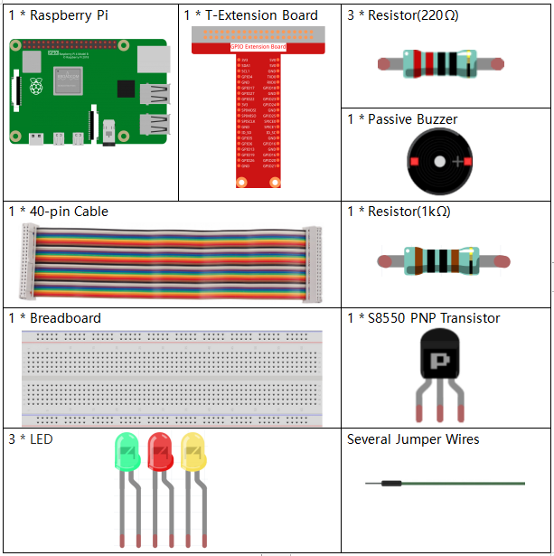
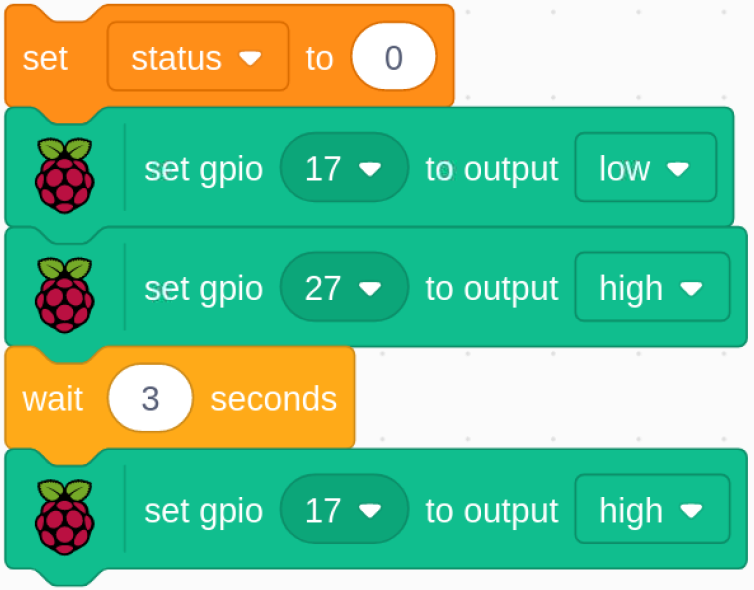

1.8 123 Wooden Man¶
Today, we are going to play a game of 123 wooden man.
Click on the green flag to start the game, hold down the right arrow key on the keyboard to make the sprite go right. If the green light is on, the sprite can move; but when the red LED is on, you have to stop the sprite from moving; otherwise the buzzer will keep ringing.

Required Components¶
Build the Circuit¶

Load the Code and See What Happens¶
Load the code file (1.8_123_wooden_man.sb3) to Scratch 3.
When the green LED is on, you can use the right arrow key to control Avery to walk to the right; when the red LED is on, if you continue to let Avery move to the right, then an alarm will sound.

Tips on Codes¶

Initialize all pins to high.

When the game starts, assign the status variable to 1, indicating that the Avery Walking sprite is movable, and then set gpio18 to low, which lights up the green LED for 5s.

Set gpio18 to high, then set gpio27 to low, which means turn off the green LED and light up the yellow LED for 0.5s.
{kind=link}
Assign the status variable to 0, which means the Avery Walking sprite is not moving; then set gpio27 to low and gpio17 to high, which turns off the yellow LED and then lights up the red LED for 3s. Finally, set gpio17 to high to turn off the red LED.

When we press the right arrow key on the keyboard, we need to switch the Avery Walking sprite to the next costume so that we can see Avery walking to the right. Then we need to determine the value of the status variable. If it is 0, it means that the Avery Walking sprite is not moving at this moment, and the buzzer will sound to warn you that you cannot press the right arrow key again.